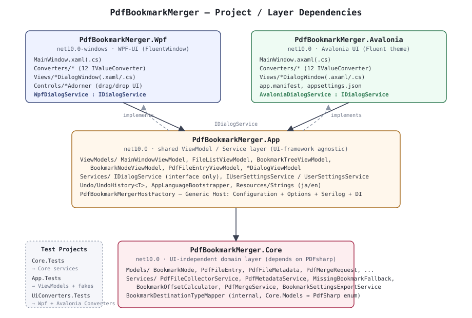

アーキテクチャ
1レイヤー構成

PdfBookmarkMerger.Core: PDFの読み書き・しおり抽出・結合ロジックを持つドメイン層。PdfSharpにのみ依存し、WPF/AvaloniaいずれのUI関連型も参照しない。PdfBookmarkMerger.App: ViewModel群とアプリ共通サービス(設定保存、i18n、Undo、Generic Hostの組み立て)を持つ層。UIフレームワーク固有の型は一切参照せず、代わりにIDialogServiceなどのインターフェースを介して各フロントエンドに実装を委ねる(依存性逆転)。PdfBookmarkMerger.Wpf/PdfBookmarkMerger.Avalonia: それぞれのUIフレームワーク上でApp層のViewModelをバインドし、D&D・ダイアログ表示・Converterなどフレームワーク固有の処理を実装する。
依存の向きは常に「UIフレームワーク → App → Core」の一方向であり、Core・Appはテストしやすく (実ウィンドウなしで動作確認できる)、UIフレームワークの差し替え・追加も比較的局所化される。
2DIとホスト組み立て
PdfBookmarkMergerHostFactory.Build(args, configureUiServices)
(src/PdfBookmarkMerger.App/PdfBookmarkMergerHostFactory.cs)
がWPF版・Avalonia版共通のホスト組み立て処理を担う。
AppPaths.AppDataDirectory/AppPaths.LogDirectoryを作成する(%AppData%/PdfBookmarkMerger配下。レジストリは使わない)。appsettings.json(実行ファイル同梱)→ ユーザー設定ファイル(settings.json)の順にIConfigurationへ読み込む(後段が優先)。- Serilogを構成する(日次ローリングファイル、14日保持、Debug構成のみコンソール追加)。
PdfBookmarkMergerOptionsをConfigurationの"PdfBookmarkMerger"セクションへバインドする。Core.ServiceCollectionExtensions.AddPdfBookmarkMergerCore()とApp.ServiceCollectionExtensions.AddPdfBookmarkMergerApp()でCore・App層のサービス/ViewModelを登録する(いずれもSingleton)。- 呼び出し元(
Wpf.App/AvaloniaApp.App)が渡すconfigureUiServicesコールバックで、IDialogServiceの実装(WpfDialogService/AvaloniaDialogService)とMainWindowを登録する。
登録されるサービス/ViewModel(抜粋):
| 層 | 登録内容 |
|---|---|
| Core | IPdfFileCollectorService, IPdfMetadataService, IPdfMergeService, IBookmarkSettingsExportService, IPdfPageRenderer, IPdfTextExtractor, IPdfLinkAnnotationService |
| App | IUserSettingsService, FileListViewModel, BookmarkTreeViewModel, LinkEditorViewModel, MainWindowViewModel |
| UIフレームワーク側 | IDialogService, MainWindow |
IPdfPageRenderer/IPdfTextExtractor/IPdfLinkAnnotationService
はリンク編集画面(WorkflowStep.EditLinks)向けのCore層サービス。詳細は
02-core-design.html §2.8〜§2.11 を参照。
3起動シーケンス
WPF版(Wpf.App.OnStartup)・Avalonia版
(AvaloniaApp.App.OnFrameworkInitializationCompleted)は
ほぼ同一の手順を踏む。
PdfBookmarkMergerHostFactory.Build(...)でホストを構築・Start()。AppLanguageBootstrapper.ApplyAsync(userSettings)をMainWindowを構築する前に同期的に待ち合わせて実行し、表示言語(Strings.Culture)を確定させる(XAMLのx:Static参照はウィンドウ構築・XAML読込時点の値で固定されるため、後から切り替えることができない)。MainWindowをDIコンテナから取得し、ThemeApplier.Apply(...)でテーマ(ライト/ダーク/システム)を適用してから表示する。
未処理例外は、Wpf.App コンストラクタ / Avalonia版
Program.Main それぞれで可能な限り早期にグローバルフックへ登録し、
PdfBookmarkMergerHostFactory.LogUnhandledException(...) 経由でSerilogへ
必ず記録する(無言でクラッシュしてログに何も残らない状態を避けるため)。AvaloniaにはWPFの
DispatcherUnhandledException に相当するUIスレッド専用フックが存在しないため、
代わりに StartWithClassicDesktopLifetime(args) 呼び出し全体を
try/catchで囲んでいる。
4横断的関心事
4.1 i18n(日本語/英語)
App/Resources/Strings.resx(既定=日本語)・Strings.en.resx(英語)から自動生成されるStringsクラスのCultureプロパティで、参照する文言セットを切り替える。AppLanguageBootstrapper.ApplyAsyncが起動時に一度だけ、設定済み言語(PdfBookmarkMergerOptions.Language)があればそれを、無ければOSのUI言語から自動判定して確定・保存する。- 設定ダイアログでの言語変更は、
AppLanguageBootstrapper.ApplyImmediateでStrings.Cultureを即座に切り替えた上で、同じViewModelインスタンスを引き継いだ新しいMainWindowを再構築して差し替える(WpfDialogService/AvaloniaDialogServiceのReplaceMainWindowForLanguageChange)。x:Static参照はウィンドウ構築時点で固定されるため、既存ウィンドウの文言をその場で書き換えることはできない。
4.2 Undo
App/Undo/UndoHistory<T>(ジェネリックなスナップショットスタック)を
BookmarkTreeViewModel が string
(ツリー全体のJSON)特化で使用する。詳細は
03-app-design.html を参照。
4.3 busy / progress の表示
MainWindowViewModel.IsBusy / BusyProgress
(ReactivePropertySlim<BusyProgressInfo?>)を唯一の「処理中」状態として扱い、
以下のいずれからも同じUI(処理中オーバーレイ、5秒経過後にのみ表示する詳細進捗テキスト)を再利用する。
- ファイル読込(
ConfirmFilesAsync) - PDF結合(
MergeAsync) BookmarkTreeViewModel.IsBusy/BusyProgressの転送 v1.2.1〜 — 大量しおりの編集・Undo時のチャンク処理。詳細は 03-app-design.html と 05-version-history.html を参照)
4.4 設定・ログの保存先
AppPaths(src/PdfBookmarkMerger.App/AppPaths.cs)が
%AppData%/PdfBookmarkMerger/ 配下に設定ファイル(settings.json)・
ログ(logs/)をまとめる。レジストリは使用せず、実行ファイルの配置場所
(読み取り専用の可能性がある)にも依存しない。設定ファイルの書き込みは、同一フォルダの一時ファイルへ
書いてから File.Move(..., overwrite: true) で原子的に置き換える方式
(UserSettingsService.SaveAsync)で、書き込み中のプロセス強制終了による
JSON破損を避けている。
4.5 App層の非同期メソッドは ConfigureAwait(false) を使わない
ViewModelの非同期メソッド(LoadAsync・RecomputeAllPageNumberDisplaysAsync 等)は、
await に ConfigureAwait(false) を付けない。WPF版はコマンドの
CanExecuteChanged を CommandManager(UIスレッド専用)経由で処理するため、
ConfigureAwait(false) を付けると最初の await 以降の継続処理がスレッドプールスレッドで
実行され、その中で ReactivePropertySlim<T>.Value を書き換えた瞬間に
InvalidOperationException(クロススレッドアクセス)が発生する。この既定を意図的に破った箇所が
03-app-design.html §7.7 に事例として残っている。
4.6 PDFium呼び出し箇所への [SupportedOSPlatform] の付け方
IPdfPageRenderer の実装はPDFium(ネイティブライブラリ)を呼ぶため .NETアナライザーが
CA1416(プラットフォーム互換性)を警告する。クラス単位・アセンブリ単位で [SupportedOSPlatform] を
付けると、そのアセンブリ内の無関係な型(BookmarkNode 等)までプラットフォーム制限が波及し
大量の警告を誘発するため、実際にPDFiumを呼ぶ2〜3行だけを
#pragma warning disable/restore CA1416 で囲む(理由をコメントで残す)。詳細は
02-core-design.html §2.8 を参照。